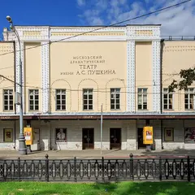

У метро · ЦАО
Куда сходить у метро «Тверская»
Для 19 мест из нашего каталога ближайшая станция — «Тверская» (ЦАО): 7 ресторанов и кафе, 5 баров, 4 кофейни и 2 театра. Например, «Театр Пушкина», «Тверская улица» и «Grand Cru». Недорогих, примерно до 1 500 ₽ на человека, — 5. 9 готовых планов проходят через эту станцию — например, «Театр Пушкина и живой джаз», с маршрутом пешком между точками.
- 19 мест
- 9 планов
Места у метро «Тверская» 19

Тверской бул., 23
Новое
Театр в особняке бывшего Камерного театра Таирова: малиновый бархат, хрустальная люстра и анфилада фойе. Тверской бульвар для прогулки — прямо у входа.
Подробнее и маршрут: Театр ПушкинаПозвать сюда: Театр Пушкина
Фото: A.Savin, FAL · Wikimedia Commons
Тверская ул.
Главная улица города: от Манежной до Триумфальной площади мимо мэрии и Елисеевского.
Подробнее и маршрут: Тверская улицаПозвать сюда: Тверская улица
Фото: mos.ru, CC BY 4.0 · Wikimedia Commons
Малая Бронная ул., 22, стр. 2
Звезда Michelin 2021
Французская кухня и одна из лучших винных карт Москвы.
ул. Малая Бронная, 4
Новое
Театр Константина Богомолова в обновлённом историческом здании: дерзкие постановки, о которых потом спорят за ужином. До Патриарших — минут десять пешком.
Подробнее и маршрут: Театр на БроннойПозвать сюда: Театр на Бронной
Тверской бул., 13, стр. 1
Новое
Ресторан и клуб на Тверском бульваре: сначала ужин, потом танцы. С четверга по субботу открыт до 5 утра, в тёплый сезон работает веранда.
Большой Козихинский пер., 9/12
Новое
Бар в духе 1920-х за зелёной дверью на Патриках: каждый вечер около 21:00 живой джаз, вход свободный, столы не бронируют — просто приходи.
ул. Большая Бронная, 2/6
Средиземноморский ресторан AVA Team на Патриарших — как маленький отпуск у моря.
Тверской бул., 14, стр. 3
Премиальный бар бренда Enfants Riches Déprimés с редкими книгами и винилом. 12–00.
Подробнее и маршрут: Anti Public LibraryПозвать сюда: Anti Public Library
Малый Козихинский пер., 10, стр. 1
Датский модерн на 30 мест у Патриарших: смёрребрёды и сезонная кухня. 14–00.
ул. Малая Бронная, 19
Греческий йогурт и выпечка во флагмане Ekonika на Патриарших. До 22:00.
Подробнее и маршрут: Ekonika Yogurt BarПозвать сюда: Ekonika Yogurt Bar
Тверской бул., 14, стр. 5
Французская кондитерская с панорамными окнами на бульвар, всё пекут на месте. 9–23.
Малая Бронная ул., 13
Ресторан Новикова и Пинского, где главные звёзды — овощи на огне.
Подробнее и маршрут: Restaurant №13Позвать сюда: Restaurant №13
Малый Гнездниковский пер., 9, стр. 2
Трёхэтажный бар-особняк с концертами, вечеринками и танцами.
Тверской бул., 26, стр. 3
12 залов в стиле шинуазри: камины, хрусталь и гобелены. 12–00.
Тверской бул., 26
Гранд-кафе Деллоса в духе парижской брассери XIX века. 10–00.
Большой Козихинский пер., 8
Японский бар хенд-роллов, рамена и гёдза от Lucky Group.
Тверской бул., 24, стр. 1
Двухэтажный итальянский ресторан в усадебном доме: паста и пицца при гостях. 9–00, чек ~2 700 ₽.
ул. Малая Бронная, 16
Яркая кофейня на Патриках: поздние завтраки, бенедикты и пицца. 8–22.
Большой Козихинский пер., 12/2
Пекарня на закваске у Пушкинской: профитроли и круассаны. 8–22.

Готовые планы 9
- Театр Пушкина · Театр · м. Тверская
- 5 минут пешкомThe Bix · Джаз-бар
Спектакль в Театре Пушкина с малиновым бархатом и хрустальной люстрой, а потом за зелёную дверь The Bix: около девяти вечера там начинается живой джаз, вход свободный.
Открыть план: Театр Пушкина и живой джазПозвать сюда: Театр Пушкина и живой джаз
Фото: A.Savin, FAL · Wikimedia Commons
- Патриаршие пруды · Пруд и сквер · м. Маяковская
- 3 минуты пешкомGrand Cru · Ресторан высокой кухни
Прогулка по Патрикам и ужин в Grand Cru с одной из лучших винных карт Москвы.
Открыть план: Вино Grand CruПозвать сюда: Вино Grand Cru
Фото: Dimа, CC BY-SA 3.0 · Wikimedia Commons
- Музей Булгакова · Музей · м. Маяковская
- 6 минут пешкомCopen 57 · Датский ресторан
Музей Булгакова, прогулка мимо Патриарших и поздний обед в крошечном датском ресторане на тридцать мест.
Открыть план: Нехорошая квартира и датская кухняПозвать сюда: Нехорошая квартира и датская кухня
Фото: Usolt, CC BY 3.0 · Wikimedia Commons
- Патриаршие пруды · Пруд и сквер · м. Маяковская
- 8 минут пешкомAФINA · Средиземноморский ресторан
Круг вокруг пруда и средиземноморский обед в AФINA.
Открыть план: Отпуск на ПатрикахПозвать сюда: Отпуск на Патриках
Фото: Dimа, CC BY-SA 3.0 · Wikimedia Commons
- Ekonika Yogurt Bar · Йогурт-бар · м. Тверская
- 3 минуты пешкомПатриаршие пруды · Пруд и сквер
- 5 минут пешкомGrace Bistro · Средиземноморское бистро
Греческий йогурт с выпечкой во флагмане Ekonika, круг вокруг Патриарших, а потом обед в средиземноморском бистро на Спиридоновке.
Открыть план: Патрики: йогурт-бар и Grace BistroПозвать сюда: Патрики: йогурт-бар и Grace Bistro
Фото: Dimа, CC BY-SA 3.0 · Wikimedia Commons
- Театр на Бронной · Театр · м. Тверская
- 3 минуты пешкомSimach · Ресторан-клуб
Дерзкий спектакль в Театре на Бронной, о котором захочется поспорить, а спорить удобнее в Simach на Тверском: сначала ужин, потом танцы — с четверга по субботу до 5 утра.
Открыть план: Богомолов и танцы до утраПозвать сюда: Богомолов и танцы до утра
- Noor Electro · Коктейльный бар · м. Пушкинская
- 10 минут пешкомРовесник · Бар и сцена
Начать с классических коктейлей в легендарном Noor, где рояль и окна в пол, а потом десять минут пешком в трёхэтажный Ровесник на концерт или вечеринку с танцами.
Открыть план: Коктейли на ТверскойПозвать сюда: Коктейли на Тверской
- Niqa · Кондитерская · м. Тверская
- 1 минута пешкомAnti Public Library · Бар-библиотека
Французские пирожные у панорамных окон на Тверской бульвар, а потом бар среди редких книг и винила в соседнем строении того же дома.
Открыть план: Пирожные и бар-библиотекаПозвать сюда: Пирожные и бар-библиотека
- Restaurant №13 · Ресторан · м. Тверская
Ресторан Новикова и Пинского, где главные звёзды — овощи.


Как позвать
- Выбери план, место или событие — в карточке адрес, цены и маршрут в Яндекс Картах.
- Нажми «Позвать сюда» — соберётся приглашение-игра для свидания или голосование для компании.
- Отправь ссылку в любой мессенджер: тебе ответят, а компания отметит, куда и когда может. Бесплатно и без регистрации.